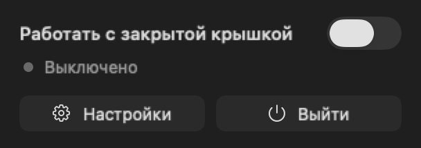
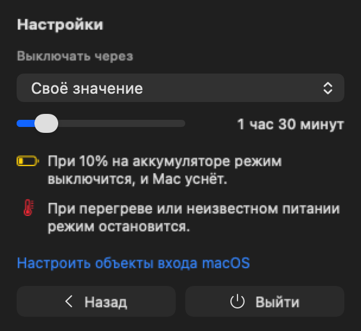
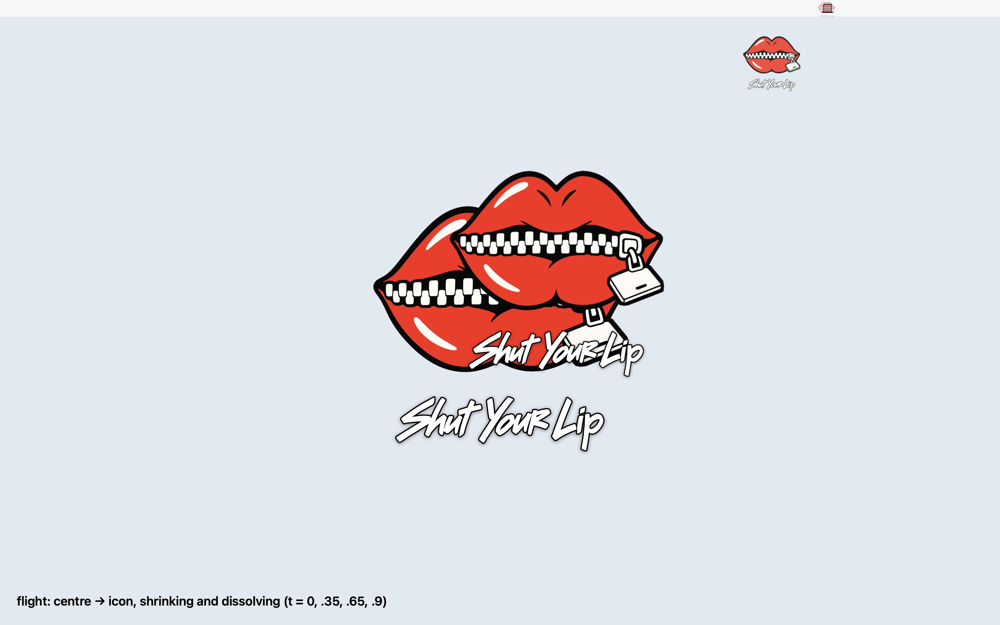

Shut Your Lid
Close your MacBook. Keep things running.
A small, local macOS menu bar app with a little attitude.
Download for macOS Installation guide
0.3.8 release candidate. Developer ID signed, accepted by Apple notarization and stapled. Public prerelease for testing. Free download, no account required. Clean-system helper and hardware acceptance remain pending; this is a release candidate, not a stable release.
One switch. Your time.
Your duration
30 minutes to 12 hours, or any whole minute with the custom slider. Change it while running.
Battery guard
At 10% or lower on battery it restores ordinary sleep and asks your Mac to sleep.
Temperature guard
Serious overheating or unavailable power information stops the mode.
A proper welcome
The lips blow a kiss and zip shut; the last “d” tips over and lands as a “p” — Shut Your Lip.
A look inside



Privacy and security
The app works locally: no account, analytics, remote server, runtime network client, document collection or runtime Keychain access. A narrowly scoped privileged helper changes the system sleep flag; app and helper verify each other’s code signature, and launchd refuses a helper with the wrong signature. The app is not App Sandbox isolated — read SECURITY.md for exact limits.
Never put a running MacBook in a bag.